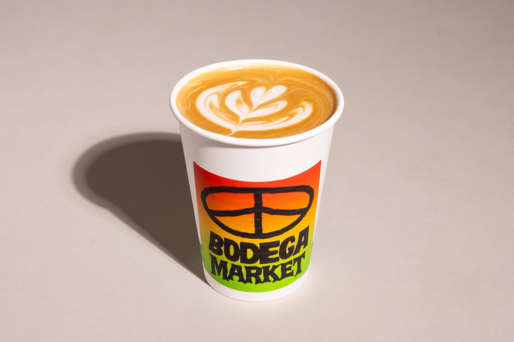
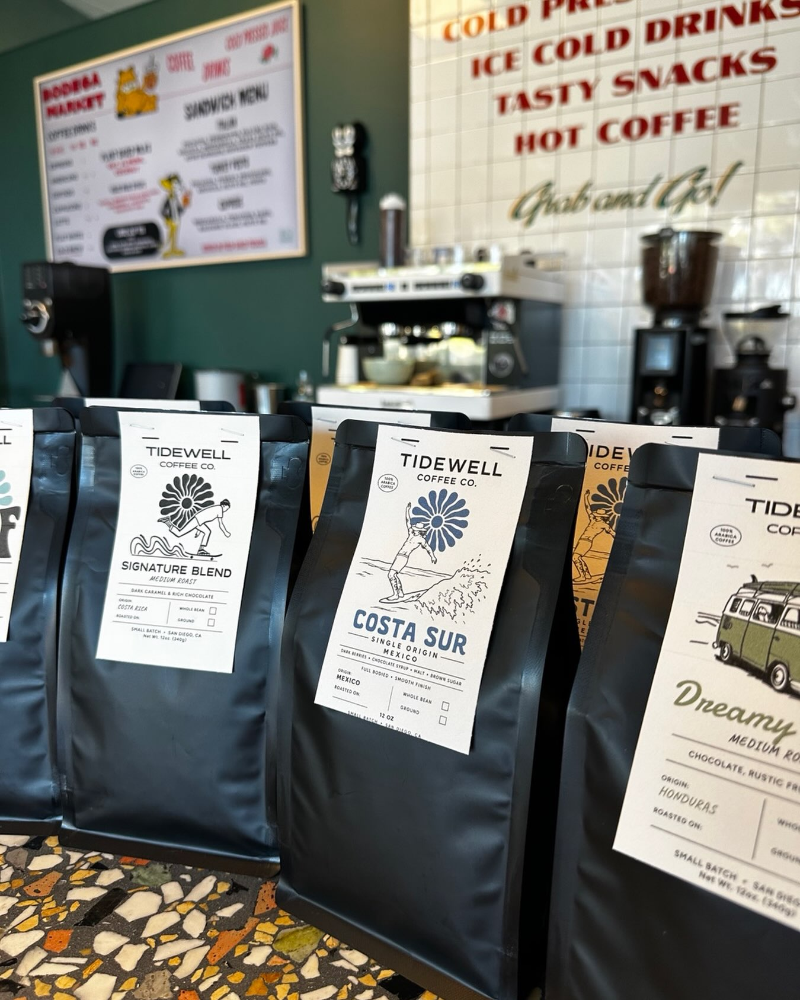
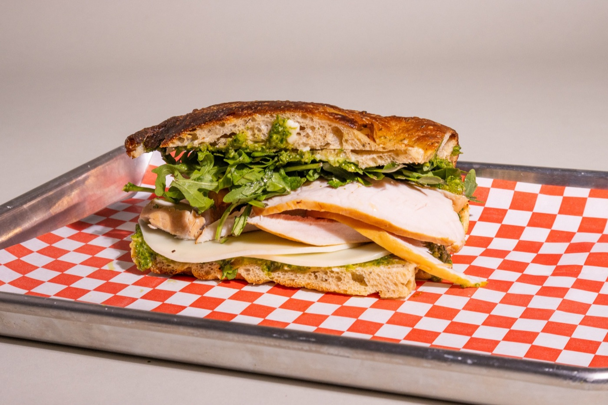

Tidewell on the bar
Espresso drinks, cold brew and loose leaf tea, all made with our beans.

Inside Bodega Market
Our second home. Tidewell coffee on the bar of a family owned market, with juice, sandwiches and shelves worth a look.
Order at the counter inside the market. Sandwiches and juices for a group can be booked through catering.
Coffee is only the start of it here.

Espresso drinks, cold brew and loose leaf tea, all made with our beans.

Six blends pressed in house, from Green #1 to black cherry.

Italian, turkey pesto and caprese, all on fresh baked focaccia.

Snacks, pantry goods and cold drinks to grab on your way out.
The original Tidewell cart is at The Sanctuary by The Lost Abbey in San Marcos.
Get in touch